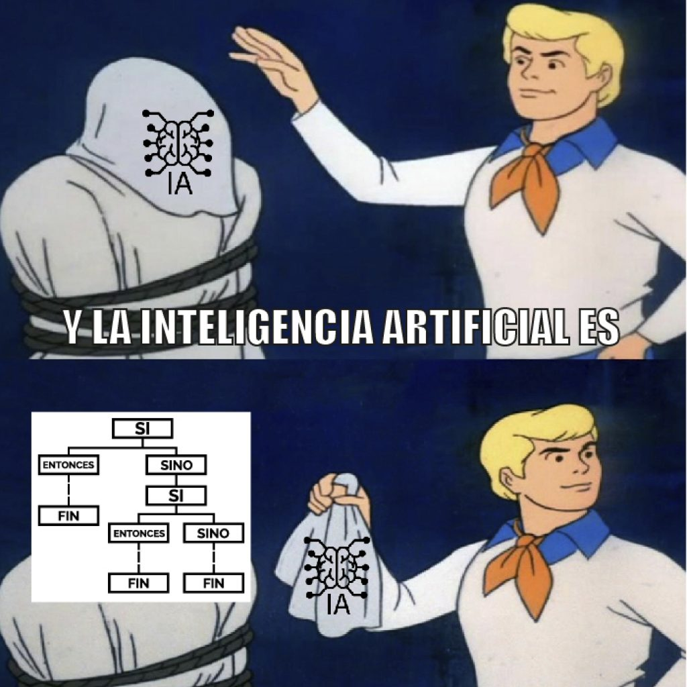

<!doctype html>
<html lang="es">

	<head>
		<meta charset="utf-8">

		<title>Explorando las alternativas open source a ChatGPT</title>

		<link rel="stylesheet" href="https://cdn.jsdelivr.net/npm/reveal.js@4.5.0/dist/reset.css">
		<link rel="stylesheet" href="https://cdn.jsdelivr.net/npm/reveal.js@4.5.0/dist/reveal.css">
		<link rel="stylesheet" href="https://cdn.jsdelivr.net/npm/reveal.js@4.5.0/dist/theme/simple.css" id="theme">

	</head>

	<body>

		<div class="reveal">

			<div class="slides">

                <section data-markdown>
                    <script type="text/template">
                        ## Explorando las alternativas open source a ChatGPT
                        *Una mirada al mundo de los modelos de lenguaje generativo de código abierto*
                    </script>
                </section>

                <section data-background="chatgpt-introduction.png" data-background-size="contain">
                </section>

                <section data-markdown>
                    <script type="text/template">
                        ## ¿Qué es ChatGPT?
                        Chatbot de inteligencia artificial basado en un modelo de lenguaje desarrollado por OpenAI que puede interactuar de forma conversacional y generar textos creativos.    
                    </script>
                </section>

                <section data-background-video="chatgpt-example.mp4" data-background-size="contain"  data-background-video-loop="loop">

                </section>

                <section data-markdown>
                    <script type="text/template">
                        ## Código original
                        
                        ---
                        ## Código comentado
                          
                    </script>
                </section>

                <section data-markdown>
                    <script type="text/template">
                        ## ¿Qué es modelo del lenguaje? 
                        Manera de simular el lenguaje natural con matemáticas o computación.    
                        ---
                        ## Funcionamiento de un modelo de lenguaje
                         
                        ---
                        # Historia
                        ---
                        ## Inicios (1950-1970)
                        * Traducción automática
                        * Experimento de Georgetown (1954)
                        ---
                        ## Años 60
                        * SHRDLU
                        * ELIZA
                        ---
                        ## Años 70 y 80
                        * Sistemas conceptuales
                        * Reglas escritas a mano
                        ---
                        ## Años 90
                        * Aprendizaje automático
                        * Modelos estadísticos
                        ---
                        ## Años 2000
                        * Redes neuronales
                        * Aprendizaje profundo
                        ---
                        ## Año 2017
                        * Transformers
                        ---
                        ## Transformers
                         
                        ---
                        ## Transformers
                         
                        ---
                        ## Inteligencia Artificial
                        
                        ---
                        ## GPT
                        GPT Generative Pre-trained Transformer
                        ---
                        ## GPT es open source hasta la versión 2 y está disponible para su prueba en plataformas como Huggingface y Google Collab.
                        ---
                         
                        ---
                        ## Probando GPT-2
                         
                        ---
                        Aunque ChatGPT no es open source uno de sus componentes principales  es open source, los Transformers.
                        ---
                        ## Tamaño estimado de GPT 3.5 
                        300 mil millones de parámetros, ocupa unos 1.2 terabytes de memoria.
                        ---
                        # Modelos Open Source 
                        ---
                        ## LLaMA
                         
                        ---
                        ## llama.cpp
                         
                        ---
                         
                        ---
                         
                        ---
                        ## Vicuna
                        Chatbot de código abierto entrenado mediante el ajuste fino de LLaMA en conversaciones compartidas por los usuarios recopiladas de ShareGPT.
                        ---
                        
                        ---
                        
                        ---
                        ## Probando Vicuna
                        
                        ---
                        ## Koalla 
                        Basado en LLaMA
                        ---
                        ## Probando Koalla
                        
                        ---
                        ## Dolly
                        Modelo entrenado en la infraestructura de **Databricks Machine Learning Platform**
                        ---
                        ## Probando Dolly
                        
                        ---
                        ## Alpaca LORA
                        Basado en LLaMA
                        ---
                        
                        ---
                        ## Alpaca Lora Serve
                        Alpaca Lora como servicio de chatbot
                        ---
                        
                        ---
                        ## Probando Alpaca Lora Serve
                        
                        ---
                        
                        ---
                        
                        ---
                        
                        ---
                        ## MiniGPT-4
                        Mejora la comprensión de la visión y el lenguaje con modelos de lenguaje avanzados y grandes.
                        ---
                        
                        ---
                        ## MiniGPT-4 en acción
                        
                        ---
                        
                        ---
                        
                        ---
                        
                        ---
                        ## gpt4all
                        Ecosistema de chatbots de código abierto entrenados en una gran colección de datos limpios de asistentes, que incluyen código, historias y diálogos.
                        ---
                        
                        ---
                        ## Probando gpt4all
                        
                        ---
                        ## Versión instalable
                        
                        ---
                        ## Probando
                        
                        ---
                        ## Versión web
                        
                        ---
                        ## Baize
                        Es un modelo de chat de código abierto entrenado con LoRA. Utiliza 100k diálogos generados permitiendo que ChatGPT hable consigo mismo. También utilizamos datos de Alpaca para mejorar su rendimiento.
                        ---
                        
                        ---
                        ## ChatDoctor
                        Un modelo de chat médico ajustado en el modelo LLaMA utilizando conocimientos del dominio médico.
                        ---
                        
                        ---
                        
                        ---
                        ## Demo 
                        llama.cpp y whisper.cpp
                        ---
                        <video data-autoplay src="https://user-images.githubusercontent.com/1991296/228024237-848f998c-c334-46a6-bef8-3271590da83b.mp4"></video>
                        ---
                        # Conclusión
                        ---
                        # FIN
                    </script>
                </section>

            </div>
		</div>

		<script src="https://cdn.jsdelivr.net/npm/reveal.js@4.5.0/dist/reveal.js"></script>
        <script src="https://cdn.jsdelivr.net/npm/reveal.js@4.5.0/plugin/markdown/markdown.js"></script>
        <script src="https://cdn.jsdelivr.net/npm/reveal.js@4.5.0/plugin/highlight/highlight.js"></script>
        <script src="https://cdn.jsdelivr.net/npm/reveal.js@4.5.0/plugin/notes/notes.js"></script>
        <script src="https://cdn.jsdelivr.net/npm/reveal.js@4.5.0/plugin/math/math.js"></script>
        <script src="https://cdn.jsdelivr.net/npm/reveal.js-menu@2.1.0/menu.js"></script>

		<script>

			Reveal.initialize({
				controls: true,
				progress: true,
				history: true,
				center: true,
                pdfSeparateFragments: true,
				plugins: [ RevealMarkdown, RevealHighlight, RevealNotes, RevealMath.KaTeX, RevealMenu ]
			});
    
		</script>

	</body>
</html>
